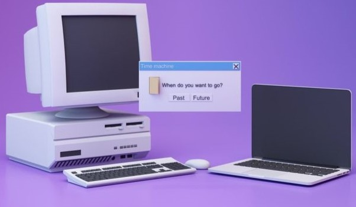

-----------¿QUÉ PUEDO APRENDER?-----------
Durante todo el curso vas a adquirir diversas herramientas que puedes aplicar en tu día a día, en la escuela e inclusive en tu futuro trabajo, es por ello que antes de inscribirte debes saber si esto te llama la atención, interesa o gusta. A continuación te dejo algunos de los temas para que puedas conocerlos:
--Introducción a la computación: Conoceras lo que realmente significa la Computación y como se diferencia de otras disciplinas.
--Sistemas operativos: Nos remontamos a la historia de los sistemas operativos, conocemos sus partes, elementos, caractertisticas y por supuesto a usarlos correctamente.
--Procesador de textos: Utilizarás algunas herramientas del procesador de textos de Microsoft (Word) y que los caracteriza.
--Hoja de Cálculo: Aprenderás algunas herramientas de la hoja de cálculo de Microsoft (Excel) y que las caracteriza.
--Presentaciones Gráficas: Te apoyarás de algunas herramientas presentes en las presentaciones gráficas de Microsoft (PowerPoint), que las caracteriza y como mejorarlas.
--Base de Datos: Crearas bases de datos y utilizaras herramientas del manejador de base de datos de Microsoft (Access) y que las caracteriza.
Sí aún no te convence o encuentras algo que te llame la atención puedes hacer click
aquí
para consultar el plan de estudios.

Página Index-MCPE